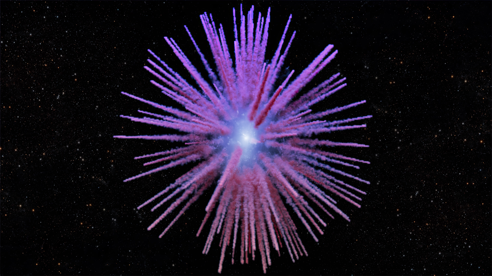

I study the life, death and afterlife of stars like our Sun. In particular, I investigate the atmospheres and evolution of white dwarf stars, which I investigate by means of multi-dimensional radiation hydrodynamic simulations and population synthesis methods. I am interested in accurately modeling the surface convection zones of these stellar remnants. I also study those white dwarfs polluted by planetary debris and the physics of accretion using X-ray, ultraviolet, optical and infrared observations (spectroscopy and photometry). For this work, I lead several observing programs as principal investigator with the James Webb Space Telescope, the Hubble Space Telescope, the Chandra X-ray Observatory, and XMM-Newton, as well as programs with state-of-the-art ground-based facilities such as Gemini, Magellan and the MMT Observatory.
My research primarily focuses on understanding the nature of convection, in particular convective overshoot, in white dwarf atmospheres using CO5BOLD - a 3D radiation-hydrodynamics code. Convective overshoot is a boundary effect which requires a multi-dimensional treatment to be properly characterised. It causes the mixing of material outside of the layers where convective instabilities live and this is significant for understanding the mass of material mixed by convection, a key parameter in calculations of the mass and composition of accreted material. I study this using passive scalar tracers in 3D simulations which allow us to quantify the macroscopic diffusive properties of the region beneath the convection zone.

In order to test the higher accretion rates predicted by models of convective overshoot, we recently made the first detection of X-rays from a metal-polluted white dwarf (see the Warwick Press Release here). Utilising the Chandra X-ray Observatory we detected a significant source of soft X-rays at the expected position of G29–38; a heavily-polluted white dwarf with a circumstellar debris disk inferred from infrared observations. When the disrupted planetary material leaves the disk and hits the white dwarf surface, a plasma is formed and cools via detectable X-ray emission. This detection of X-rays provides the "smoking gun" signature of ongoing accretion at these planet-eating stars. [Artist's impression credit: University of Warwick/Mark Garlick]
I use observed white dwarf populations and population synthesis models to investigate stellar evolution, including the initial-final mass relation, the spectral evolution of white dwarf atmospheres through convective mixing, and the mass distributions of metal-polluted white dwarfs. By combining Gaia-defined volume-limited samples, such as the white dwarfs within 40 pc, with detailed evolutionary models, I aim to understand how white dwarfs form, cool and transform over time, while also using their atmospheric compositions to constrain the properties of accreted planetary material and the evolution of planetary systems.

I am interested in thermonuclear explosions of white dwarfs, including the unusual Type Iax supernovae that only partially disrupt their progenitors and leave behind surviving stellar remnants. These events provide an important laboratory for understanding the physics of white dwarf explosions, binary evolution and the origin of their diverse remnants. In recent work, we investigated the 1181 supernova remnant (Pa 30) using integral-field spectroscopy with the Keck Cosmic Web Imager. By measuring the Doppler shifts of its faint, filamentary ejecta, we constructed a three-dimensional map of the remnant and found that the material is expanding ballistically and consistent with an explosion occurring nearly 850 years ago. The unusual morphology, large central cavity and evidence for an asymmetric explosion offer new constraints on the poorly understood mechanisms responsible for Type Iax supernovae. [Artist's impression credit: Keck Observatory/Adam Makarenko]